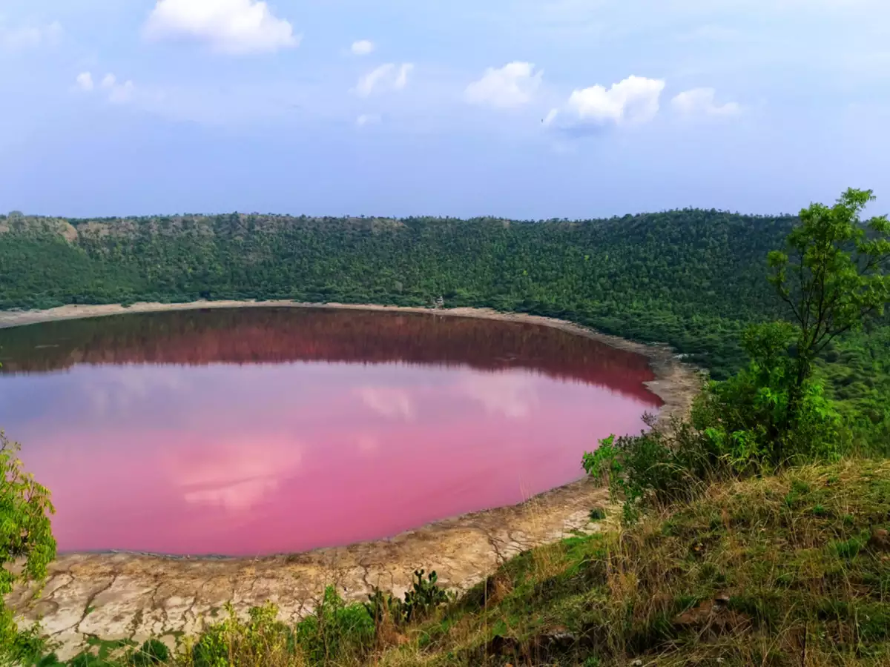
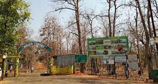
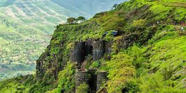
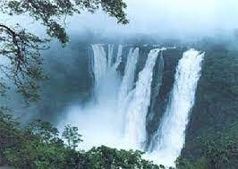

LONAR LAKE
Lonar Lake, also known as Lonar crater, is a notified National Geo-heritage Monument, saline,
soda lake, located at Lonar in Buldhana district, Maharashtra, India. Lonar Lake was created by a
meteorite collision impact during the Pleistocene Epoch. It is one of the four known,
hyper-velocity, impact craters in basaltic rock anywhere on Earth. The other three basaltic impact
structures are in southern Brazil. Lonar Lake has a mean diameter of 1.2 kilometres (3,900 ft) and is
about 137 metres (449 ft) below the crater rim. The meteor crater rim is about 1.8 kilometres (5,900 ft)
in diameter. India's Lonar Crater began causing confusion soon after it was identified in 1823 by a
British.

NAGZIRA
Nagzira wildlife sanctuary is located between Bhandara-Gondia district of Maharashtra. Closest National
Highway is NH-53. Nagzira Wildlife Sanctuary is locked in the arms of nature and adorned with a
picturesque landscape, luxuriant vegetation and serves as a living outdoor museum to explore and
appreciate nature. This sanctuary has a number of fish, 34 species of mammals, 166 species of birds, 36
species of reptiles and four species of amphibians. The invertebrate fauna includes a number of
butterfly and other insect species. Large wild mammals found here include the tiger, leopard, Indian gaur,
sambar, nilgai, chital, wild boar, sloth bear, barking deer, mouse deer and wild dog. There is also an
elephant named Rupa. Nearly 30,000 tourists visit this sanctuary annually.

SINHAGAD FORT
formation available about this fort, suggests that the fort could have been built 2000 years ago.
The caves and the carvings in the Kaundinyeshwar temple stand as proofs for the same.
Previously known as Kondhana, the fort had been the site of many battles, most
notably the Battle of Sinhagad in 1670. Perched on an isolated cliff of the Bhuleswar range in the
Sahyadri Mountains, the fort is situated on a hill about 760 metres above ground and 1,312 metres above
mean sea level.The Sinhagad (Lion's Fort) was strategically built to provide natural protection due
to its very steep

GATEWAY OF INDIA
The Gateway of India is an arch-monument built in the early 20th century in the city of Mumbai, India.
It was erected to commemorate the landing of King-Emperor George V, the first British monarch to visit
India, in December 1911 at Ramchandani Road near Shyamaprasad Mukherjee Chowk.The foundation stone was
laid in March 1913 for a monument built in the Indo-Saracenic style, incorporating elements of
16th-century Gujarati architecture. The final design of the monument by architect George Wittet was
sanctioned only in 1914, and construction was completed in 1924. The structure is a memorial arch made
of basalt, which is 26 metres (85 feet) high, with an architectural resemblance to a triumphial arch
as well as Gujarati architecture of the time

KUNE FALLS
The Kune Falls is a waterfall at Lonavla in Pune district in the Indian state of Maharashtra.
It is the 14th highest waterfall in India.Kune Falls, located centrally within the Lonavala
Khandala valley is a three tiered waterfalls with a total height of 200 metres (660 ft); the
highest drop being 100 metres (330 ft).